Colby Sato
UI/UX Designer at Vecna Technologies
Olin College, BS Engineering, 2014
Bio
In College I learned about user-centered design, and I was hooked. I love user-centered design, because it involves learning about people and context.
Since graduating, I have worked as a UX designer. Working professionally has been great, because constraints push me to be more creative. Right now, I am studying visual design and web development. In my free time I like to cook, run, and hang out with my dog.
Contact
Education Technology User Research
User research aimed at more clearly articulating the value Authess can offer different students. (3 min)


Sustainable Cooking
Combining quantitative analysis with user research to propose a more sustainable dinner-making process. (3 min)
Remixipe App Design
Translating research from a class into mobile app mockups. (2 min)
Ed-Tech User Research How might different students be affected by innovation in education authentication?
Authess
Authess is a company seeking to change online education by developing authentic assessment tools. These look like tests that measure student competency by seeing how students solve problems: what information they need, what questions they ask, and what their solutions look like. Authess is an early-stage startup with expertise in the Ed-Tech and academic spaces, but needed more research on students. In the spring of 2015, I conducted user research for them. At the end of the project, I produced personas and an empathy map that helped them to make distinctions between their users, support the value of their product with research, and identify other areas of opportunity.
Interviewing users
I interviewed 8 students who had taken courses with an online component in the past year. In these interviews I asked them why they took the online courses, how the online platform affected their learning, and what they got out of the course.
Creating User Portraits
After these interviews, I sifted through about two pages of typed notes per person, and distilled them to groups of notes.
Creating Personas
I noticed that some of these groups of notes were examples of behaviors or attitudes related to intrinsic motivation, and other were more related to extrinsic motivation. To see the distribution of these groups, I tagged the intrinsic motivation groups with a green circle, and the extrinsic motivation groups with a red triangle.
As seen in the user portraits, most users have a combination of both kinds of groups. Depending on the course, the student might be focused more on learning or grades. This affects their attitude toward their class, how they study for the class, and how they perform. Though simplistic from a pedagogical perspective, for the sake of developing a first-prototype it made sense to base personas on intrinsic vs. extrinsic motivation.
Persona: Graded Grant

Summary
Graded Grant focuses on grades because grades are how he has been told he will get ahead in life.
Pain Points
- Grant doesn't like how online courses require answers to exactly fit the answer in the program. For example, writing "2.1" versus "2."
- The flexible schedule of online courses allows Grant to procrastinate, leading to a buildup of work at the end of the semester.
- Grant is frustrated when other students cheat. When students take tests outside of the classroom and answers are multiple choice or fill-in-the-blank, it is easy for students to cheat.
Persona: Curious Curry

Summary
Curious Curry focuses on seeing how the content in the course connects and is applicable, because Curry sees a future where she uses this knowledge.
Pain Points
- Curry doesn't like how online courses only mark answers on assignments as right or wrong without an explanation. Having more thorough answers would help her to figure out what she misunderstood.
- Curry learns better when she engages in conversations with other students, and that can be lacking in online courses that don't have forums or collaboration built in.
Results
Authess does not address all of these problems, but the problems within the scope of Authess' mission can definitely be solved by the Authess' authentic assessment.
Answers in Authess are based on problem-solving approaches, so Grant can still get credit for what steps he followed correctly. Because questions are not limited to multiple-choice and fill-in-the-blank, tests are more difficult to cheat on. Combined, Authess address two of Grant’s three pain points associated with online education assessment.
Authess' questions are based on ways of thinking and concepts, so Authess’ approach to assessment aligns with Curry’s learning goals. By explaining how the answers relate to concepts, Authess can help Curry to understand more deeply. Curry also seeks interaction with other students. Though forums are not a core feature of Authess, they certainly could be in the future. If Authess wanted to scale in the future, Authess could rely on users such as Curious Curry to create their own tests using Authess’ platform.
At the end of the research, the CEO of Authess appreciate how this research allowed him to understand the end users in more detail. Before, it seemed that the users contradicted each other, but this separation of user experiences into personas clarified those contradictions. This research also corroborated hunches previously held by the founders, and conviently came at a time when the founders were seeking funding.
Collaboration Technology (Side Project) How Can We Make Writing More Collaborative?
Intro
This past winter I had some spare time, so I found myself looking for a design project. I started reading about collaboration technology, and I often saw mobile mentioned as part of the product offering. One of my favorite collaboration tools is ShareLaTeX, so I looked into ways a mobile platform could supplement ShareLaTeX. Sharelatex is a collaborative, cloud-based, LaTeX editing tool that allows multiple users to simultaneously edit the same LaTeX document. In the end, I arrived at some wireframes for a ShareLaTeX Mobile App.
Simplifying Functionality for Mobile
The first, simple approach was to simply take ShareLaTeX, break it into tabs or swipable screens, and move it onto a mobile app. However, I thought that an opportunity might be missed if we simply make the mobile app the same thing as the desktop version.
Current Process
Looking at the process of editing a research paper on ShareLaTeX or any platform, a pain point becomes clear: receiving edits takes time. Even if you want feedback on a tiny change, you need to send your entire paper over. Editing an entire paper requires a lot of time to be set aside, and that slows down the feedback process.
Even to have minor edits reviewed, a whole draft is generally sent.
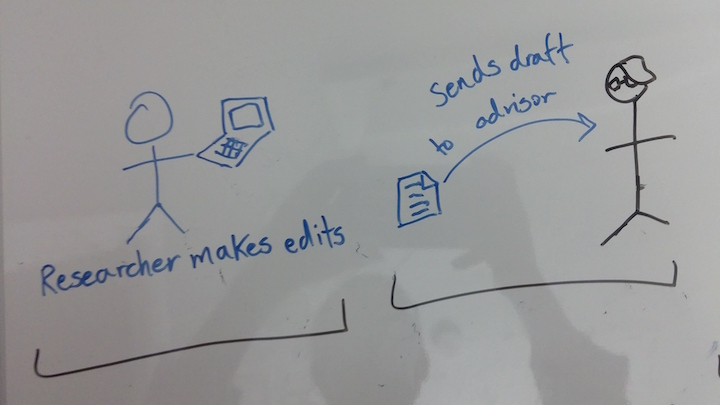Setting aside a couple hours to edit is difficult.
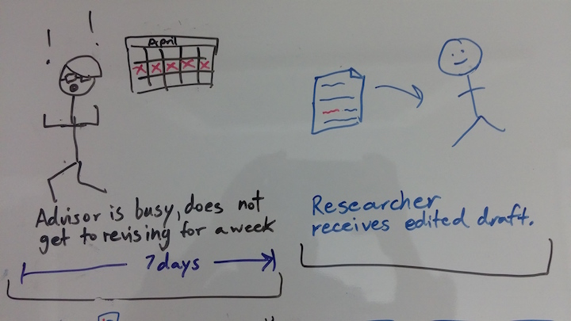Process with a Mobile App.
What if instead, a user could send edits over in pieces that could easily fit into the editor’s busy schedule?
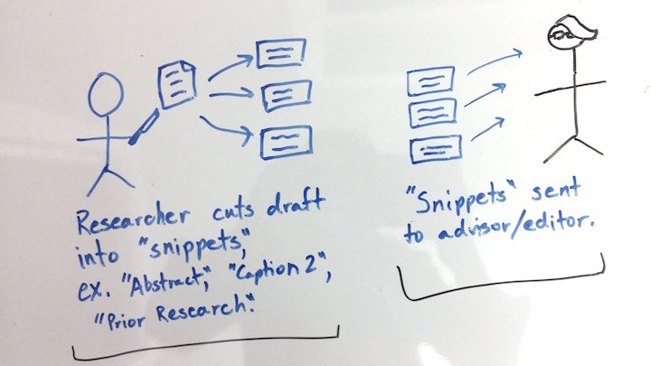The mobile platform allows for editing all the time. The advisor/editor can edit on the train or while waiting for a pot to boil. Time that would normally be idle can now be used more productively.
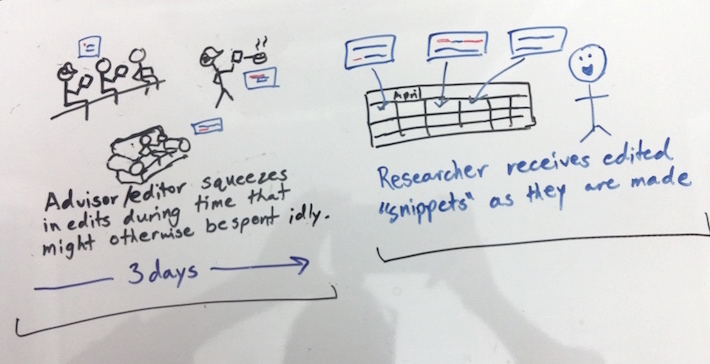Primary Feature
When the user selects a section of text to be submitted for editing. The text then shows up in the app of the editor along with all other sections. All changes are tracked and show up in the desktop version of the piece as edits.
Place where all "chunks" can be accessed.

Once a text section is selected, it can be edited.

The other main feature of the mobile app is the ability to view captions and figures together and edit captions.

Navigation
The page at the center of navigation is the home page where a user can keep track of the work for which teammates are seeking feedback.

Future Work
This ShareLaTeX mobile app could decrease the time it takes to receive feedback, but it would certainly need to be tested and integrated in some way with the ShareLaTeX website. Another possible problem is how the sense of flow and awareness of the whole is lost when a piece of writing is segmented. However, if the writer and editor already have a shared understanding of the piece, possible errors could be mitigated. Future revisions of this app should seek to address that problem for users who are at the beginning of editing. Beyond editing LaTeX files, this process of cutting up writing pieces and sharing them for faster edits could be applied to other kinds of writing.
Sustainable Cooking (Sustainable Design Course) How do we make meal preparation more sustainable?
Intro
My team and I looked at dinner preparation on a stovetop to think about ways that future technology could be used to make everyday actions more sustainable. We were interested in dinner preparation, because it is a key part of most peoples' day and is connected to subjects as personal and complex as health and culture. After much research, we came to a surprising conclusion. We found that the embedded costs within the food itself had more of an impact than the stovetop or the energy used to cook the food. With this knowledge in mind, we ended up designing an app called "ReMixipe" that helps people reduce food waste and eat less meat without compromising flavor.
Team
My team composed of three people: Aman Kapur, Anne-Marie Buchenan, and me. Aman was majoring in Engingeering with a Concentration in Computing, and Annie was majoring in Mechanical Engineering. We all shared similar design roles, participating in interviews, persona formation and idea generation.
Pain Points
We started this process by interviewing people, and developed two personas: Get 'Er Done Grant and Passionate Patricia, each with different expectations for their food. 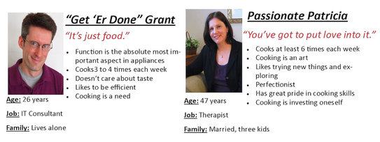
- Grant values: cost, efficiency, convenience
- Patricia values: quality, flavor, nutrition
Comparing the Impact of Food and the Stovetop.
To look at the energy impact of cooking food, we measured the energy draw of a stovetop while food was cooked on it. We boiled a small pot of water, cooked a few steaks, cooked some potatoes and boiled some carrots.
To analyze the environmental impact of a stove, we ran a Life-Cycle Assessment. We analyzed what each part was made of, weighed it, and looked up the environmental cost of that material per mass in the idemat database. With these combined measurements, we had an estimation of the cost to produce, use, and dispose of the stove top.
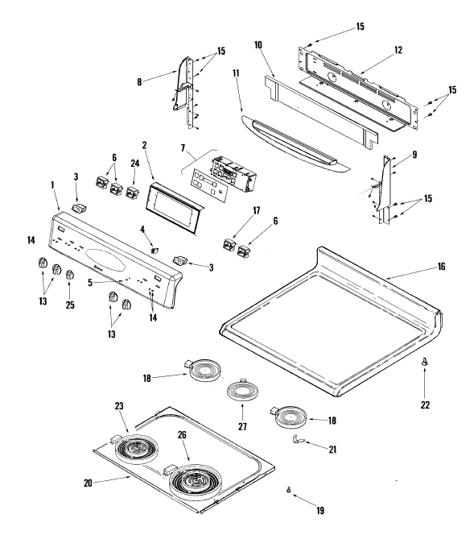A part of dinner preparation is the food being prepared, so we included the impact of a meal into our calculations. The situation we looked at was a meal including chicken, veggies and potatoes cooked on a stove. The stove would probably be used for 13 to 20 years, and its impact was divided over the many uses in this timeframe.
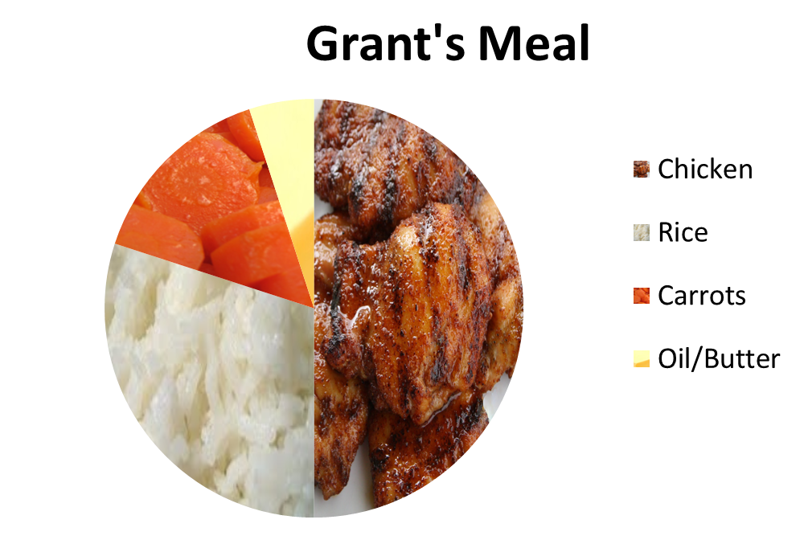What we found was that the vast majority of impact from a meal comes from the food and not the stove itself. In other words, if you want to make cooking more sustainable, rather than designing a more energy-efficient stovetop, your time is better-spent redesigning the process by which people decide what to cook. This led us to look to the next stage: designing a mobile app that recommends modified recipes.
Changing the Decision-Making Process
So, how does one go about helping people make different food choices? Guilt-tripping might be the usual route for environmentalists, but we believe there's a better way. People we interviewed already have between 10 and 20 recipes that they cycle through. People cook what they cook because they know those recipes and feel comfortable with them.
We envisioned an app that helps people cook more sustainable meals by modifying the recipes. This is a viable solution because it does not require a significant change in behavior, and it is in line with our personas' values. Grant likes to save money, and Patricia cares about the health of her children. A shopper can often save money and make healthier food by reducing the meat cooked or using different meats. For example, tofu is cheaper than beef, and it's more healthful. However, as the late Boromir might say: "one does not simply replace meat with tofu." And he's correct.
The app that we propose does more than substitute. It takes in recipes and creates a profile of the various flavor compounds in the food and how they work together. When ingredients are substituted, new cooking methods and ingredients are suggested to achieve an appealing alternative. Over time, the app will collect feedback from the user to develop an understanding of the user's preferences. Like a good DJ, it feels the crowd and plays to the taste of its audience.
How to Use ReMixipe
- Input a recipe, verbally, via web, photo, or typing.
- Get back recipes with various remixes to see how they can be changed or scaled.
- Choose a recipe, and shopping list is generated with shopping places.
- After meal is over, recipe app suggests remixes.
How it Reduces Food Waste
Ten percent of the US energy budget goes into food production, and as much as forty percent of food produced in the US is wasted. (National Resources Defense Council, 2012) Part of the waste is food spoilage, but another aspect is food that has been prepared goes uneaten as leftovers. A situation faced by Patricia is that she makes a meal for her family and the leftovers are not large enough for another meal. These awkwardly-sized portions are then left in the fridge to rot until disposed. To address this, the App solicits feedback from the user about the number of leftover servings so that it can scale recipes in the future.
Remixipe App Design (Side Project) How should the workflow be designed?
Individual Work on App Design
The extent of the project was to look at an activity and propose a solution grounded in user research and quantitative analysis. The solution was only developed to the point of a list of features and considerations based on the personas developed. Independently, I decided to take this work a step further and make some initial designs for the app.
Remixipe Task Flow Diagram
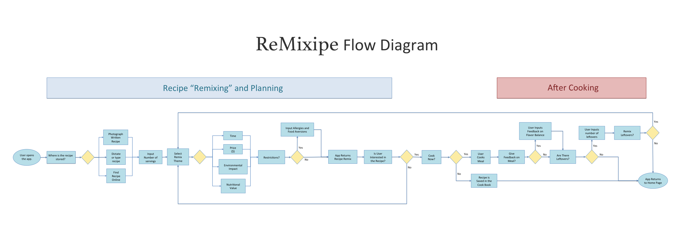Before designing the app, I analyzed the process envisioned using a flow diagram. I used sticky notes to write out decision points and steps, making several iterations on the diagram. While creating this diagram, I saw where major decision we made that would require a change in screen. This helped me to divide up actions and see which actions should be grouped together on the same page.
Mockups
Following the rough draft of the task flow on sticky notes, I developed mockups on pieces of paper. After satisfied with the workflow, I translated these paper mockups into mockups in Balsamiq. This iteration allowed me to think more about the spacing of features and how to compress them into the iPhone screen. I organized the app into four main steps: Input, Remix, Cook and Review.
Input
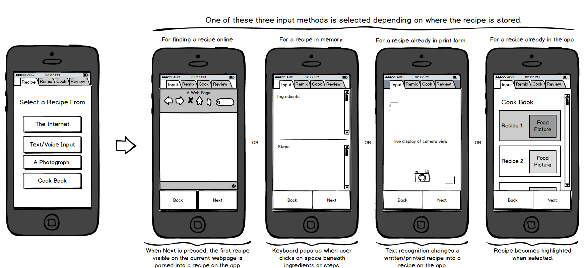People store recipes and find them in a variety of ways, so the Input set of pages was designed to allow users to input recipes from a range of sources. For example, if Passionate Patricia uses recipe cards, then she can take a photo of the card and the app reads the text. If Get 'er Done Grant is unsure of what he wants but has an idea, he can search for recipes online.
Remix
People value different things in their meals, and the Remix page was designed to accommodate this. Users can choose between remixing their meal based on price, environmental impact, healthfulness, or preparation time. Fortunately for the purposes of this app, three of the four metrics generally coincide with decreased environmental impact.
More themes on which to remix foods were considered, but based on Grant's desire for simplicity and affordability and Patricia's emphasis on nutritional value, these themes should be sufficient.
Cook
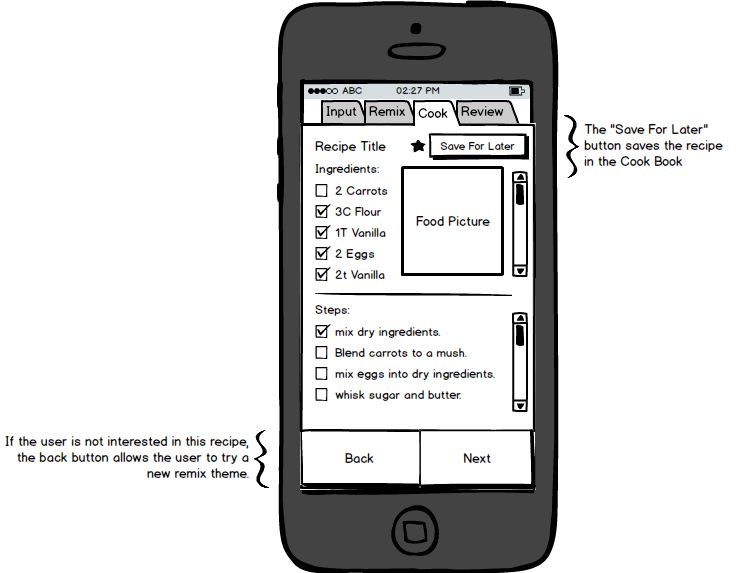The Cook Page allows users both do three things: Cook the recipe, save the recipe for later, and reject the current recipe to try a different remix theme.
Passionate patricia has difficulty with technology, so I wanted to reduce the amount of navigation. To do this, steps and ingredients were included on the same page. Putting all this features on the same page also allows the user to easily see the relationship between them.
Review
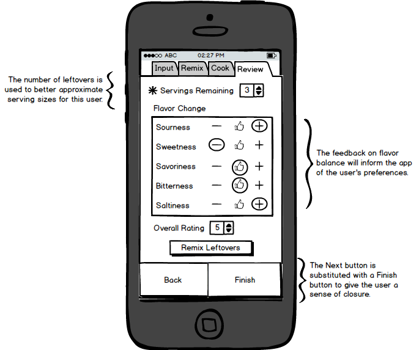The review page allows users to give feedback on the flavor balance of the meal and rate the meal. If there are leftovers, the user can use them to make a new remix.
Future Work
These are mockups and are useful for initial idea exploration, but with any iteration, they could be improved. Questions remain surrounding whether Passionate Patricia and Get 'Er Done Grant would actually use the app. If they do not, what are reasons they choose not to? There's also the challenge of user adoption. Passionate Patricia usually cooks from memory, so this app needs to make a compelling enough reason to become part of her routine. These questions and more would need to be investigated in codesign sessions with the users.
Social Cooking How would one design an app to make cooking with friends easier?
Intro
In 2012, I took a class in Human Interface Design, and began to appreciate the considerations and process that goes into designing computer interfaces. In this class, my team and I designed a tablet app that helps people organize cooking events with their friends. We worked through several stages: persona creation, scenario mapping, raw ideation, design development, design refinement and finally an interactive prototype. We finished with a design that is optimized to remind users of upcoming events and inspire the creation of new events.
Pain Points
Through interviews, we identified two pain points.
Team:
Our team had five people in it: two electrical-computer engineering majors(ECE), a political science student, a computer science major, and me. As a UI design course, there was a fair amount of programming involved. With the support of the computer science student, I was able to pick up front-end development. By the end of the project, I was pushing code for our prototype.
Persona Creation
We started by learning about the values of this group, their familiarity with technology, the role of food in their life, and what they do for fun with friends. We placed portraits of the people we interviewed within several frameworks. We saw two groups emerge that were then captured in our personas: Abby and Corinne.
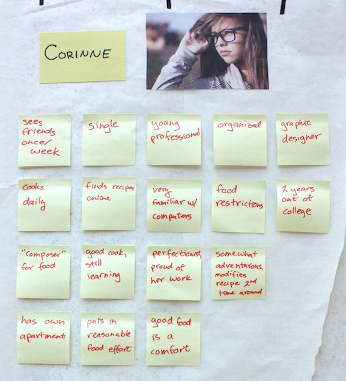Corinne generally eats at the cafeteria and cooks once a month, planning what to cook the day of with her friends.
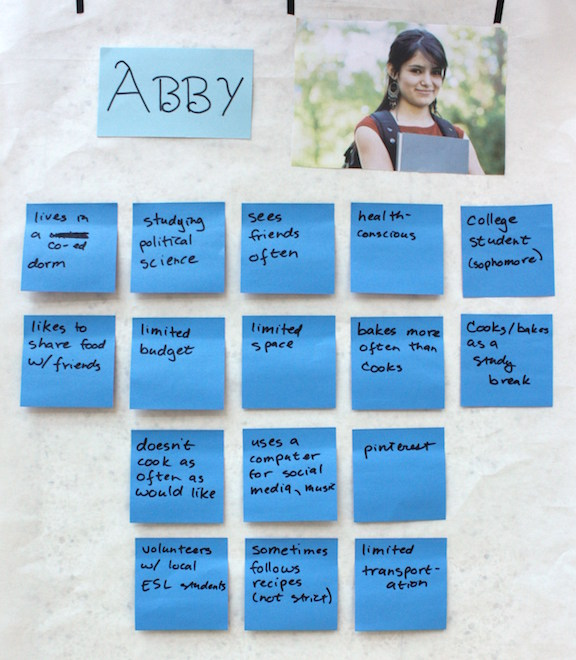Abby cooks frequently with much planning. She cooks once a week, and plans out what to cook each week, picking up the groceries each Sunday.
Comparables and inspiration
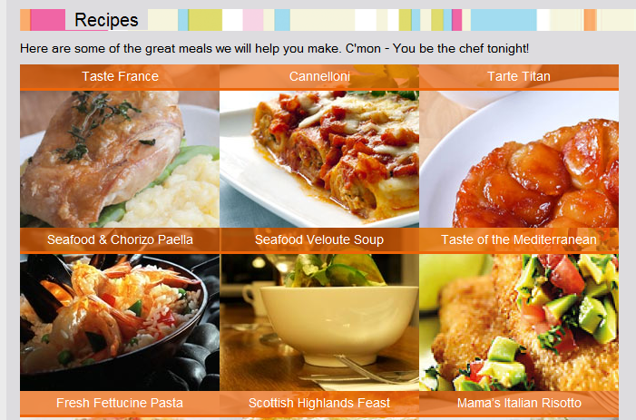We were inspired by sites that allow people to collect feedback from others and find recipes to cook. By clicking on an image, the user sees a recipe. This ease of movement from desire to planning helps people move beyond simply thinking about food to making it.
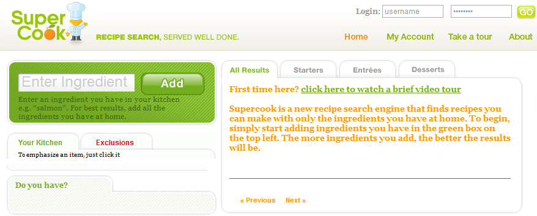The second example is from Survey Monkey. We liked how survey monkey allows users to easily make surveys, collect feedback, and share results with users. The flexibility of the kinds of feedback that can be collected is also a great feature.
The last two examples are from SuperCook. You start by selecting common ingredients, and a recipe with those ingredients emerges. For the recipes you cannot cook, missing ingredients are listed. This kind of tool simplifies the planning process, and would be especially appreciated by someone like Abby who doesn't plan ahead and has a limited budget.
Task Flow analysis
For each persona, we mapped out the process by which they decide on recipes and make the food. Piecing these together, we had an overview of how different users go from thinking about food to cooking food. On the map below, each user is marked with dots on steps that they take.
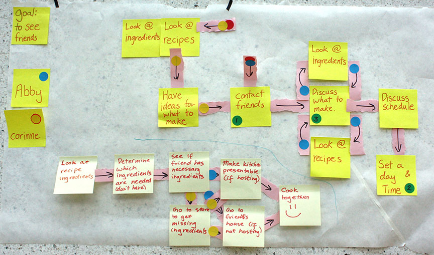Initial ideation
My team started out with sketches of ideas on paper, using post-its for descriptions
One idea for the main page focused more on organization. This main page and presents the upcoming events so that users can easily check the app to stay up to date. For users that do not always have their calendar organized, this ended up being a particularly useful feature.
Redesigns
Throughout our design process, we ran usability studies. Through this work, we redesigned the timeline. The timeline is a tool on the homepage that allows users to see details of upcoming events. Our intent was that the user would simply click on each event to see the details. However, this was not clear to users. Instead of redesigning the buttons, we realized that a change in orientation of the timeline from horizontal to vertical would allow us to display the details up-front. For more examples of redesigns, you can visit the team webpage.
Future Work
Future work might look at addressing the difficulty in deciding what to cook or bake. The app could do this if connected to users' calendars and Instagram or Pinterest accounts. If two users that are connected on the cooking app "heart" the same post on Instagram or Pinterest, the app would know this and would search both calendars for overlapping availability. Another possibility is a Tinder-like swiping screen to identify what kinds of food each person likes and using this to create suggestions for users. Many ideas are possible, but the appropriateness of features would depend on what users are the main audience.